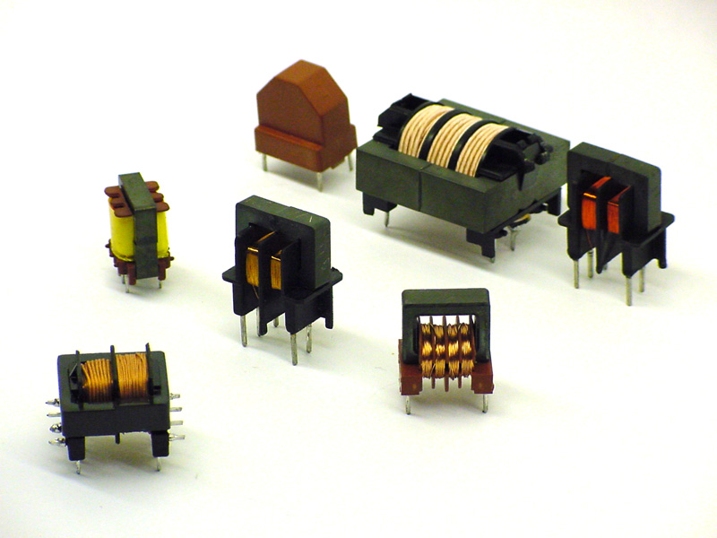

1.3.6. Индуктивные элементы

Индуктивным элементом называется такой элемент электрической цепи, который обладает только свойством накопления энергии магнитного поля. Математической моделью индуктивного элемента L является вебер-амперная характеристика, которая устанавливает зависимость суммарного магнитного потока, образованного в витках катушки, (потокосцепления ψ) от величины протекающего через катушку тока I. Уравнение, описывающее свойства индуктивного элемента имеет вид: ψ = I*L
Индуктивные элементы делятся на катушки индуктивности и трансформаторы.
По назначению катушки индуктивности можно разделить на четыре группы:
- катушки контуров,
- катушки связи,
- дроссели высокой частоты,
- дроссели низкой частоты.
По конструктивному признаку катушки могут быть разделены на однослойные и многослойные; цилиндрические, спиральные и тороидальные; экранированные и неэкранированные; катушки без сердечников и катушки с сердечниками и др.
Катушки индуктивности характеризуются следующими основными параметрами: индуктивностью и точностью, добротностью, собственной емкостью и стабильностью.
Однослойные катушки применяются на частотах выше 1500 кГц. Намотка может быть сплошная и с принудительным шагом. Однослойные катушки с принудительным шагом отличаются высокой добротностью (Q=150...400) и стабильностью;
применяются в основном в контурах коротких (KB) и ультракоротких (УКВ) волн. Высокостабильные катушки, применяемые в контурах гетеродинов на KB и УКВ, наматываются при незначительном натяжении проводом, нагретым до 80...120 С.
Для катушек с индуктивностью выше 15...20 мкГн применяется сплошная однослойная намотка. Целесообразность перехода на сплошную намотку определяется диаметром катушки. Ориентировочные значения индуктивности, при которых целесообразен переход на сплошную намотку:
- Диаметр каркаса (в мм) – 6; 10; 15; 20; 25
- Индуктивность (в мкГн) – 1,8; 4; 10; 20; 30
Катушки со сплошной намоткой также отличаются высокой добротностью и широко используются в контурах на коротких, промежуточных и средних волнах, ее ли требуется индуктивность не выше 200...500 мкГн. Целесообразность перехода на многослойную намотку определяется диаметром катушки. Ориентировочные значения индуктивности, при которых целесообразен переход на многослойную намотку:
- Диаметр каркаса (в мм) – 10; 15; 20; 25; 30
- Индуктивность (в мкГн) – 30; 50; 100; 200; 500
Индуктивность однослойной катушки рассчитывается по формуле:
L= 0,01DN2/(l/D+0.44), где L – индуктивность (в мкГн), D – диаметр катушки (в см), 1 – длина намотки (в см), N – число витков.
Добротность однослойных катушек определяется в основном диаметром провода и шагом намотки (расстоянием между витками) х. Установлено, что на высоких частотах оптимальное значение диаметра намоточного провода определяется из выражения: d=0,707x.
Многослойные катушки разделяются на простые и сложные. Примерами простых намоток являются рядовая многослойная намотка и намотка "кучей" (или в навал). Не секционированные многослойные катушки с простыми намотками отличаются пониженной добротностью и стабильностью, большой собственной емкостью, требуют применения каркасов. Индуктивность многослойной катушки рассчитывается по формуле: L= 0,08(DN)2/(3D+9l+10t), где L – индуктивность катушки, мкГн; D – средний диаметр намотки, см; l – длина намотки, см; t – толщина катушки, см; N – число витков.
Если задана индуктивность и нужно рассчитать число витков, то следует задать величины D, l и t и подсчитать необходимое число витков. После этого следует произвести проверку толщины катушки по формуле: t= zNd2/l, где d – диаметр провода с изоляцией (в мм), z= 1,05...1,3 – коэффициент не плотности намотки при d = 1...0,08 соответственно.
Секционированные катушки индуктивности характеризуются достаточно высокой добротностью, пониженной собственной емкостью, меньшим наружным диаметром и допускают в небольших пределах регулировку индуктивности путем смещения секций. Они применяются как в качестве контурных в контурах длинных и средних волн, так и в качестве дросселей высокой частоты. Каждая секция представляет собой обычную многослойную катушку с небольшим числом витков. Число секций может быть от двух до восьми, иногда даже больше. Расчет секционированных катушек сводится к расчету индуктивности одной секции. Индуктивность секционированной катушки, состоящей из п секций: L= Lc[n+2k(n-1)], где Lc – индуктивность секции, k – коэффициент связи между смежными секциями (k=0.3 при расстоянии между секциями, равном половине ширины секции, которая равна среднему радиусу катушки).
Собственная емкость катушки понижает добротность и стабильность настройки контуров. В диапазонных контурах эта емкость уменьшает коэффициент перекрытия диапазона. Величина собственной емкости определяется типом намотки и размерами катушки. Наименьшая собственная емкость (несколько пФ) у однослойных катушек, намотанных с принудительным шагом. Многослойные катушки обладают большей емкостью, величина которой зависит от способа намотки. Так, емкость катушек с универсальной намоткой составляет 5...25 пФ, а с рядовой многослойной намоткой может быть выше 50 пФ.
Дросселем высокой частоты называют катушки индуктивности, используемые в цепях питания в качестве фильтрующих элементов. Индуктивность дросселя должна быть достаточно большой, а собственная емкость – малой. Конструктивно дроссели высокой частоты выполняются в виде однослойных или многослойных катушек. Для дросселей длинных и средних волн применяется секционированная многослойная намотка. Дроссели для коротких волн и для метровых волн обычно имеют однослойную намотку – сплошную или с принудительным шагом. В качестве каркаса часто используются керамические стержни от резисторов. Расчет числа витков дросселя производится так же, как и расчет числа витков катушек индуктивности.